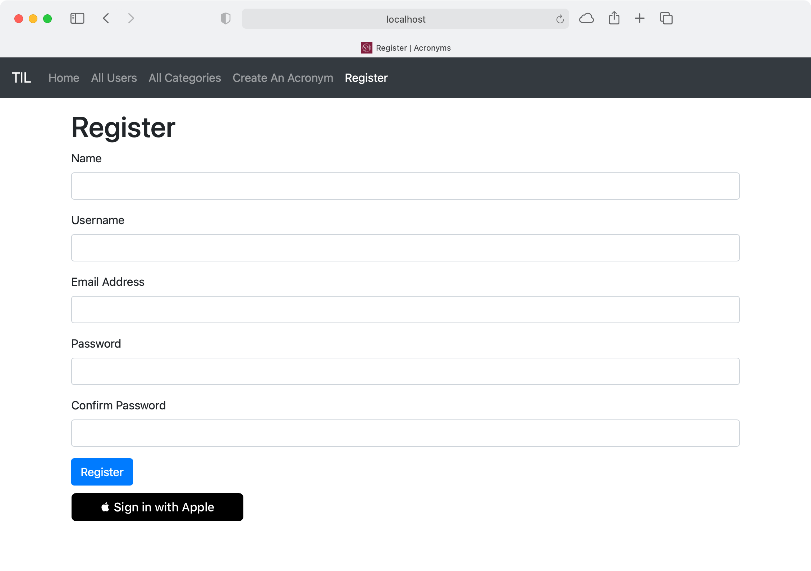
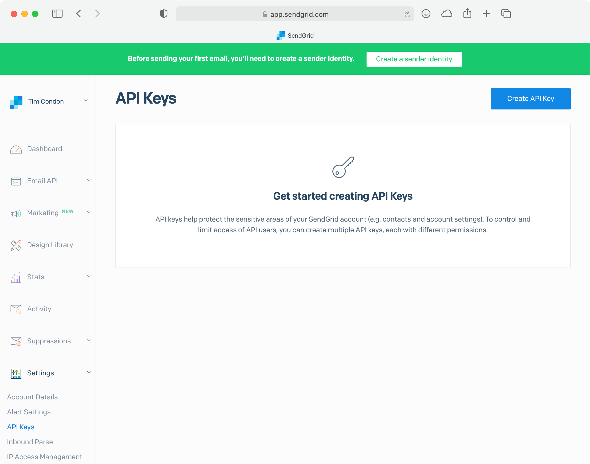
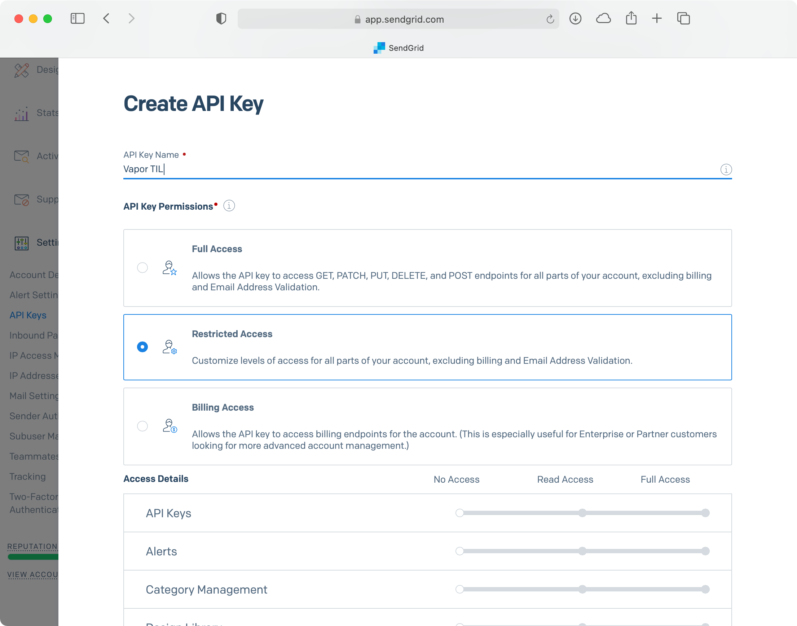
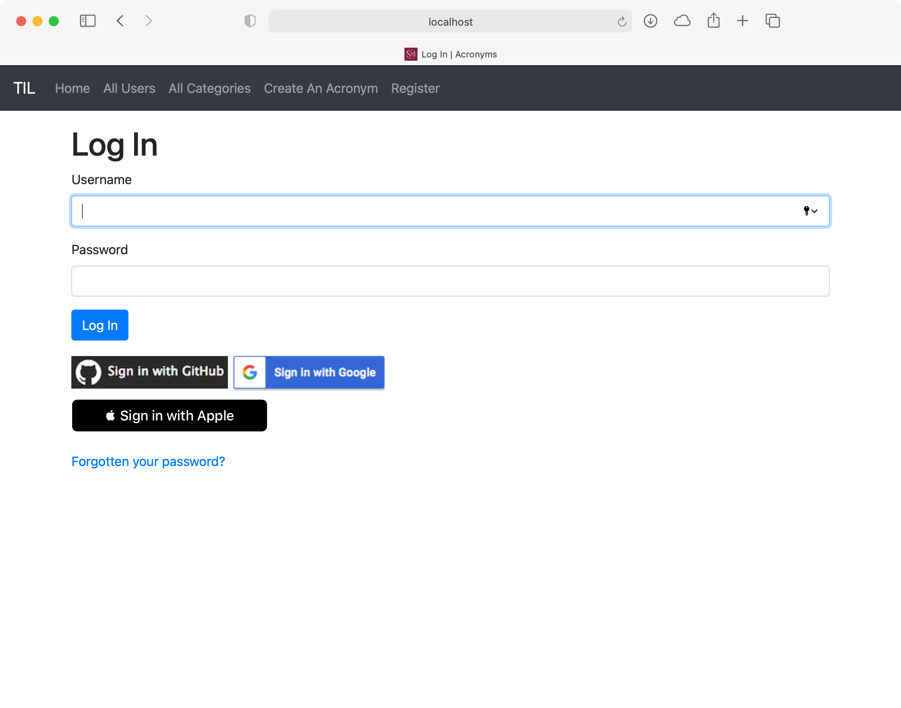
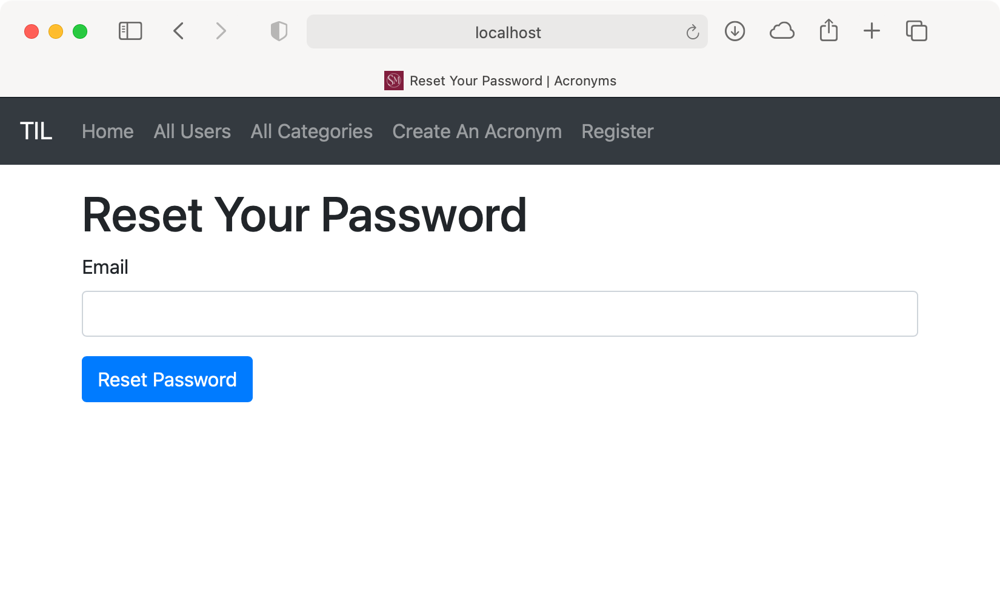
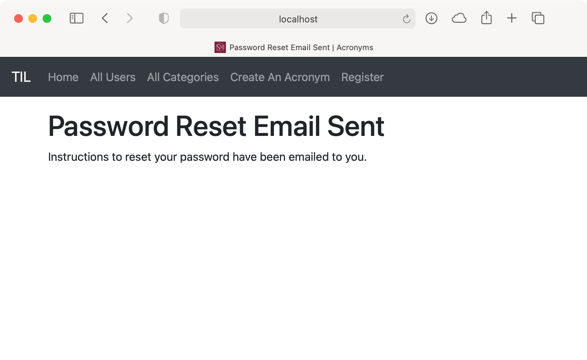
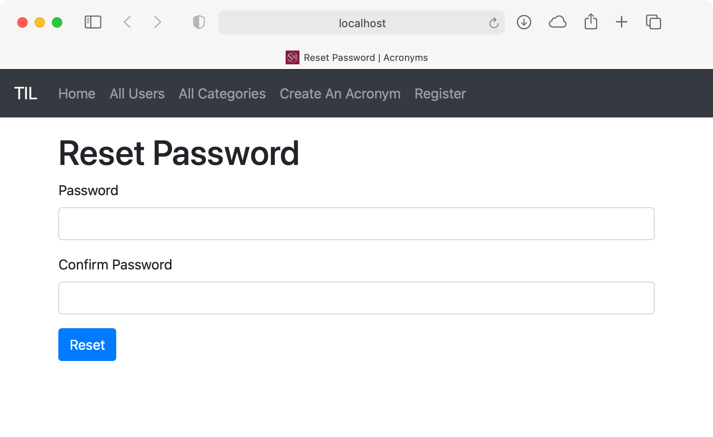

Chapter 25: Password Reset & Emails¶
In this chapter, you’ll learn how to integrate an email service to send emails to users. Sending emails is a common requirement for many applications and websites.
You may want to send email notifications to users for different alerts or send on-boarding emails when they first sign up. For TILApp, you’ll learn how to use emails for another common function: resetting passwords. First, you’ll change the TIL User to include an email address. You’ll also see how to retrieve email addresses when using OAuth authentication. Next, you’ll integrate a community package to send emails via SendGrid. Finally, you’ll learn how to set up a password reset flow in the website.
User email addresses¶
To send emails to users, you need a way to store their addresses! In Xcode, open User.swift and after var siwaIdentifier: String? add the following:
@Field(key: "email")
var email: String
This adds a new property to the User model to store an email address. Next, replace the initializer with the following, to account for the new property:
init(
id: UUID? = nil,
name: String,
username: String,
password: String,
siwaIdentifier: String? = nil,
email: String
) {
self.name = name
self.username = username
self.password = password
self.siwaIdentifier = siwaIdentifier
self.email = email
}
Next, open CreateUser.swift. In prepare(on:), add the following below .field("siwaIdentifier", .string):
.field("email", .string, .required)
.unique(on: "email")
This adds the field to the database and creates a unique key constraint on the email field. In CreateAdminUser.swift, replace let user = User(...) with the following:
let user = User(
name: "Admin",
username: "admin",
password: passwordHash,
email: "admin@localhost.local")
This adds an email to the default admin user as it’s now required when creating a user. Provide a known email address if you wish.
Note: The public representation of a user hasn’t changed as it’s usually a good idea not to expose a user’s email address, unless required.
Web registration¶
One method of creating users in the TIL app is registering through the website. Open WebsiteController.swift and add the following property to the bottom of RegisterData:
let emailAddress: String
This is the email address a user provides when registering. In the extension conforming RegisterData to Validatable, add the following:
validations.add("emailAddress", as: String.self, is: .email)
after:
validations.add(
"zipCode",
as: String.self,
is: .zipCode,
required: false)
This ensures the email address provided at registration is valid. In registerPostHandler(_:data:), replace let user = ... with the following:
let user = User(
name: data.name,
username: data.username,
password: password,
email: data.emailAddress)
This uses the email the user provides at registration to create the new user model. Open register.leaf and add the following under the form-group for Username:
<div class="form-group">
<label for="emailAddress">Email Address</label>
<input type="email" name="emailAddress" class="form-control"
id="emailAddress"/>
</div>
This adds the new, required email field to the registration form.
Social media login¶
Before you can can build the application, you must fix the compilation errors.
Fixing Sign in with Apple¶
Getting the user’s email address for a Sign in with Apple login is simple; Apple provides it in the JWT used for logging in! Open WebsiteController.swift, find appleAuthRedirectHandler(_:) and replace let user = ... with the following:
let user = User(
name: "\(firstName) \(lastName)",
username: email,
password: UUID().uuidString,
siwaIdentifier: siwaToken.subject.value,
email: email)
Next, open UsersController.swift. In signInWithApple(_:), replace let user = ... with the following:
let user = User(
name: name,
username: email,
password: UUID().uuidString,
siwaIdentifier: siwaToken.subject.value,
email: email)
Both of these use the email taken from the JWT and pass it to the initializer. That’s Sign in with Apple done.
Fixing Google¶
Getting the user’s email address for a Google login is also simple; Google provides it when you request the user’s information! Open ImperialController.swift and, in processGoogleLogin(request:token:), replace let user = ... with the following:
let user = User(
name: userInfo.name,
username: userInfo.email,
password: UUID().uuidString,
email: userInfo.email)
This takes the user information you receive when the user signs in with Google and adds the email address to the initializer. For Google sign-ins, there’s nothing more to do.
Fixing GitHub¶
Getting the email address for a GitHub user is more complicated. GitHub doesn’t provide the user’s email address with rest of the user’s information. You must get the email address in a second request.
First, in ImperialController.swift in boot(routes:), replace try routes.oAuth(from: GitHub.self, ...) with the following:
try routes.oAuth(
from: GitHub.self,
authenticate: "login-github",
callback: githubCallbackURL,
scope: ["user:email"],
completion: processGitHubLogin)
This requests the user:email scope when requesting access to a user’s account. Next, add the following below GitHubUserInfo:
struct GitHubEmailInfo: Content {
let email: String
}
This represents the data received from GitHub’s API when requesting a user’s email. Next, add the following below getUser(on:), in the GitHub extension:
// 1
static func getEmails(on request: Request) throws
-> EventLoopFuture<[GitHubEmailInfo]> {
// 2
var headers = HTTPHeaders()
try headers.add(
name: .authorization,
value: "token \(request.accessToken())")
headers.add(name: .userAgent, value: "vapor")
// 3
let githubUserAPIURL: URI =
"https://api.github.com/user/emails"
return request.client
.get(githubUserAPIURL, headers: headers)
.flatMapThrowing { response in
// 4
guard response.status == .ok else {
// 5
if response.status == .unauthorized {
throw Abort.redirect(to: "/login-github")
} else {
throw Abort(.internalServerError)
}
}
// 6
return try response.content
.decode([GitHubEmailInfo].self)
}
}
Here’s what this does:
- Declare a new method for getting a user’s emails from GitHub. The method returns
[GitHubEmailInfo]since the API returns all emails the user has associated with the account. - Set the bearer authorization token to the user’s access token.
- Make a request to the GitHub API to retrieve the user’s emails. Unwrap the returned future.
- Ensure the response from the API was 200 OK.
- If the response was 401 Unauthorized, redirect to the GitHub login OAuth flow. This assumes the token is expired. Otherwise, return a 500 Internal Server Error.
- Decode the response to
[GitHubUserInfo].
Finally, replace processGitHubLogin(request:token) with the following:
func processGitHubLogin(request: Request, token: String) throws
-> EventLoopFuture<ResponseEncodable> {
// 1
return try GitHub.getUser(on: request)
.and(GitHub.getEmails(on: request))
.flatMap { userInfo, emailInfo in
return User.query(on: request.db)
.filter(\.$username == userInfo.login)
.first()
.flatMap { foundUser in
guard let existingUser = foundUser else {
// 2
let user = User(
name: userInfo.name,
username: userInfo.login,
password: UUID().uuidString,
email: emailInfo[0].email)
return user.save(on: request.db).flatMap {
request.session.authenticate(user)
return generateRedirect(on: request, for: user)
}
}
request.session.authenticate(existingUser)
return generateRedirect(
on: request,
for: existingUser)
}
}
}
Here’s what changed:
- Send a request to get the user’s emails at the same time as getting user’s information.
- Use the returned email information to create a new
Userobject.
Fixing the tests¶
The main target now compiles. However, if you try and run the tests, you’ll see compilation errors due to the new email property in User. Open Models+Testable.swift and, in create(name:username:on:), replace let user = ... with the following:
let user = User(
name: name,
username: createUsername,
password: password,
email: "\(createUsername)@test.com")
This creates a new user with an email based on the username to avoid any conflicts. Since the email isn’t exposed in the API, you don’t need to test the response with a defined email.
Next, open Application+Testable.swift. In test(_:_:headers:body:loggedInRequest:loggedInUser:file:line:beforeRequest:afterRequest), replace userToLogin = ... with:
userToLogin = User(
name: "Admin",
username: "admin",
password: "password",
email: "admin@localhost.local")
This uses the email from CreateAdminUser log the admin user in.
Next, open UserTests.swift and, in testUserCanBeSavedWithAPI(), replace let user = ... with the following:
let user = User(
name: usersName,
username: usersUsername,
password: "password",
email: "\(usersUsername)@test.com")
This creates the user with the required email parameter, using usersUsername to generate the email address.
Make sure you have your .env file that you built over the past three chapters and that you have set a custom working directory in Xcode. Then, run the tests and they should all pass.
Note: You must have the test database in Docker running for the tests to work. See Chapter 11, “Testing”, for details on how to set this up.
Running the app¶
The application should now compile. Before you can run the app, however, you must reset the database due to the new email property. In Terminal, type:
docker rm -f postgres
docker run --name postgres \
-e POSTGRES_DB=vapor_database \
-e POSTGRES_USER=vapor_username \
-e POSTGRES_PASSWORD=vapor_password \
-p 5432:5432 -d postgres
These are the same commands you’ve used in previous chapters to reset the database.
Finally, build and run. In your browser, go to http://localhost:8080/ and click Register. The register screen now requires that you provide an email address:

You can also log in with your Google or GitHub account without any issues. Note that when you log in to your GitHub account, GitHub prompts you to allow the app additional access to your account.
This is because you’re now requesting the user:email scope:

iOS app registration¶
With the addition of the email property for a user, the iOS application can no longer create users. Open the iOS project in Xcode and open CreateUserData.swift. Add a new property to CreateUserData below var password: String?:
var email: String
This stores the user’s email when sending the new user to the API. Next, replace the initializer with the following:
init(
name: String,
username: String,
password: String,
email: String
) {
self.name = name
self.username = username
self.password = password
self.email = email
}
This adds email as a parameter to the initializer and initializes email with the provided value.
Next, open Main.storyboard and find the Create User scene. Select the Create User table view and, in the Attributes inspector, set the number of sections to 4. In the Document Outline, select the new table view section and set the Header to Email Address in the Attributes inspector.
Next, select the new text field in the Document Outline and change the Placeholder to User’s Email. Change the Content Type and Keyboard Type to Email Address to show the email keyboard when the user selects the field. Uncheck Secure Text Entry if it’s checked.
Open CreateUserTableViewController.swift in the Assistant editor. Create an IBOutlet for the user’s email text field below @IBOutlet weak var passwordTextField: UITextField! by Control-dragging to CreateUserTableViewController. Name the outlet emailTextField.
In save(_:), add the following above let user = ...:
guard
let email = emailTextField.text,
!email.isEmpty
else {
ErrorPresenter
.showError(message: "You must specify an email", on: self)
return
}
This ensures the user provides an email address before trying to create a user. Finally, replace let user = ... with the following:
let user = CreateUserData(
name: name,
username: username,
password: password,
email: email)
This provides an email address to CreateUserData from the text field you created above. Run TILApp in another Xcode window. Then, build and run the iOS app and log in with the admin credentials. Tap the Users tab and the + icon. Fill in the form, including the new email field, and tap Save. The new user will appear in the users list.
Integrating SendGrid¶
Finally, you’ve added an email address to the user model! Now it’s time to learn how to send emails. This chapter uses SendGrid for that purpose. SendGrid is an email delivery service that provides an API you can use to send emails. It has a free tier allowing you to send 100 emails a day at no cost. There’s also a community package — https://github.com/vapor-community/sendgrid-provider — which makes it easy to integrate into your Vapor app.
While it’s possible to send emails directly using SwiftNIO, it’s not advisable in most cases. On consumer ISPs, the ports to send emails are frequently blocked to combat spam. If you’re hosting your application on something like AWS, the IP addresses of the servers are usually blacklisted, again to combat spam. Therefore, it’s usually a good idea to use a service to send the emails for you.
Adding the dependency¶
In the TIL app, open Package.swift and replace .package(url: "https://github.com/vapor/jwt.git", from: "4.0.0"), with the following:
.package(
url: "https://github.com/vapor/jwt.git",
from: "4.0.0"),
.package(
url: "https://github.com/vapor-community/sendgrid.git",
from: "4.0.0")
Next, add the dependency to your App target’s dependency array. Replace .product(name: "JWT", package: "jwt"), with:
.product(name: "JWT", package: "jwt"),
.product(name: "SendGrid", package: "sendgrid")
Signing up for SendGrid and getting a token¶
To use SendGrid, you must create an account. Visit https://signup.sendgrid.com and fill out the form to sign up:
Once you’re in the dashboard, click Settings to expand the menu and click API Keys:

Click Create API Key and provide a name for the key — for example, Vapor TIL. Select Restricted Access:

Scroll down and enable the Mail Send permission. This gives your API key permission to send emails but no access to other parts of the SendGrid API. Click Create & View. and SendGrid will show you your API key:

Like the OAuth client secrets, you must keep the API key safe and secure and not check the key into source control. You will not be able to retrieve the key again so make sure you save it somewhere!
Finally, you need to set up a sender identity before sending emails. At the top of the dashboard, click Create a sender identity. You can choose two different options, but for now, click Create a Single Sender:
Fill out the form to create a sender identity and click Create. You’ll receive an email to verify your address, so click Verify Single Sender when you receive it.
Integrating with Vapor¶
With your API key created, go back to the TIL app in Xcode. Open configure.swift and add the following below import Leaf:
import SendGrid
Next, add the following below try routes(app):
app.sendgrid.initialize()
This initializes the SendGrid service and ensures you’ve configured it correctly. In a text editor, open .env and add the following to the bottom of the file:
SENDGRID_API_KEY=<YOUR_API_KEY>
This adds the API key you created earlier to the app’s environment variables. SendGrid looks for SENDGRID_API_KEY when interacting with the SendGrid API.
You’re now ready to send emails with SendGrid!
Setting up a password reset flow¶
To build a good experience for your app’s users, you must provide a way for them to reset a forgotten password. You’ll implement that now.
Forgotten password page¶
The first part of the password reset flow consists of two actions:
- Presenting a form to the user which asks for the registered email address.
- Handling the POST request the form sends.
Open WebsiteController.swift and, below buildSIWAContext(_:), add the following:
// 1
func forgottenPasswordHandler(_ req: Request)
-> EventLoopFuture<View> {
// 2
req.view.render(
"forgottenPassword",
["title": "Reset Your Password"])
}
Here’s what this does:
- Define a route handler,
forgottenPasswordHandler(_:), that returnsEventLoopFuture<View>. - Return the rendered result of the
forgottenPasswordtemplate. This template only requires a single property in the context, the title. Instead of creating a new context type to pass to the template, this code code passes the title in a dictionary. This helps reduce the amount of code you need to write.
Register the route in boot(routes:) above authSessionsRoutes.get(use: indexHandler):
authSessionsRoutes.get(
"forgottenPassword",
use: forgottenPasswordHandler)
This maps a GET request to /forgottenPassword to forgottenPasswordHandler(_:). In Resources/Views, create the new template file and name it forgottenPassword.leaf. Open the new file and insert the following:
<!-- 1 -->
#extend("base"):
<!-- 2 -->
#export("content"):
<!-- 3 -->
<h1>#(title)</h1>
<!-- 4 -->
<form method="post">
<div class="form-group">
<label for="email">Email</label>
<!-- 5 -->
<input type="email" name="email" class="form-control"
id="email"/>
</div>
<!-- 6 -->
<button type="submit" class="btn btn-primary">
Reset Password
</button>
</form>
#endexport
#endextend
Here’s what the new template does:
- Extend the base template as you have with the rest of the templates.
- Export the
contentproperty used by the base template. - Display the title of the page using the parameter passed in via the context.
- Define a form with the POST method. This sends a POST request to the same URL when the user submits the form.
- Define a single input in the form for the email address.
- Set a submit button with the title Reset Password.
Finally, open login.leaf and, below the script for Sign in with Apple, add the following:
<br />
<a href="/forgottenPassword">Forgotten your password?</a>
This adds a link to the new route with a line break to put the link below the social media login buttons. Build and run the app. Go to http://localhost:8080/login in the browser.
You’ll see the new link for forgotten password:

Click the link to see the new forgotten password form:

Back in Xcode, open WebsiteController.swift. Create a new route below forgottenPasswordHandler(_:) to handle the POST request from the form:
// 1
func forgottenPasswordPostHandler(_ req: Request)
throws -> EventLoopFuture<View> {
// 2
let email =
try req.content.get(String.self, at: "email")
// 3
return User.query(on: req.db)
.filter(\.$email == email)
.first()
.flatMap { user in
// 4
req.view
.render("forgottenPasswordConfirmed")
}
}
Here’s what this route handler does:
- Define a route handler for the POST request that returns a view.
- Get the email from the request’s body. Since there’s only one parameter you’re interested in, you can use
get(_:at:)instead of creating a newContenttype. - Get the user from the database by creating a query with a filter for the email provided. Since the emails are unique, you’ll either get one result or none.
- Return a view rendered from a new
forgottenPasswordConfirmedtemplate. You want to return the same response whether the email exists or not to avoid revealing anything useful to an attacker.
Register the new route by adding the following below authSessionsRoutes.get("forgottenPassword", use: forgottenPasswordHandler) in boot(routes:):
authSessionsRoutes.post(
"forgottenPassword",
use: forgottenPasswordPostHandler)
This maps a POST request to /forgottenPassword to forgottenPasswordPostHandler(_:).
Next, in Resources/Views, create the new template file: forgottenPasswordConfirmed.leaf. Open the new file in an editor and add the following:
#extend("base"):
#export("content"):
<h1>#(title)</h1>
<p>Instructions to reset your password have
been emailed to you.</p>
#endexport
#endextend
Like the other templates file, this uses base.leaf for the majority of the content. The page displays a message indicating the site has sent an email to the user.
To secure a password reset request, you should create a random token and send it to the user. Create a new file called ResetPasswordToken.swift in Sources/App/Models and insert the following:
import Fluent
import Vapor
final class ResetPasswordToken: Model, Content {
static let schema = "resetPasswordTokens"
@ID
var id: UUID?
@Field(key: "token")
var token: String
@Parent(key: "userID")
var user: User
init() {}
init(id: UUID? = nil, token: String, userID: User.IDValue) {
self.id = id
self.token = token
self.$user.id = userID
}
}
Here’s what the new model code does:
This defines a new class, ResetPasswordToken, that contains a UUID for the ID, a String for the actual token and the user’s ID as a @Parent property.
Next, create a new file in Sources/App/Migrations called CreateResetPasswordToken.swift and add the following:
import Fluent
struct CreateResetPasswordToken: Migration {
func prepare(on database: Database) -> EventLoopFuture<Void> {
database.schema("resetPasswordTokens")
.id()
.field("token", .string, .required)
.field(
"userID",
.uuid,
.required,
.references("users", "id"))
.unique(on: "token")
.create()
}
func revert(on database: Database) -> EventLoopFuture<Void> {
database.schema("resetPasswordTokens").delete()
}
}
This creates the migration for ResetPasswordToken. It links userID to the User’s table and marks token as unique.
Open configure.swift and, below app.migrations.add(CreateAdminUser()), add the following:
app.migrations.add(CreateResetPasswordToken())
This adds the new model to the list of migrations so the app creates the table the next time the it runs.
Sending emails¶
Return to WebsiteController.swift. At the top of the file, insert the following below import Fluent:
import SendGrid
Then, in forgottenPasswordPostHandler(_:), replace req.view.render("forgottenPasswordConfirmed") with the following:
// 1
guard let user = user else {
return req.view.render(
"forgottenPasswordConfirmed",
["title": "Password Reset Email Sent"])
}
// 2
let resetTokenString =
Data([UInt8].random(count: 32)).base32EncodedString()
// 3
let resetToken: ResetPasswordToken
do {
resetToken = try ResetPasswordToken(
token: resetTokenString,
userID: user.requireID())
} catch {
return req.eventLoop.future(error: error)
}
// 4
return resetToken.save(on: req.db).flatMap {
// 5
let emailContent = """
<p>You've requested to reset your password. <a
href="http://localhost:8080/resetPassword?\
token=\(resetTokenString)">
Click here</a> to reset your password.</p>
"""
// 6
let emailAddress = EmailAddress(
email: user.email,
name: user.name)
let fromEmail = EmailAddress(
email: "<SENDGRID SENDER EMAIL>",
name: "Vapor TIL")
// 7
let emailConfig = Personalization(
to: [emailAddress],
subject: "Reset Your Password")
// 8
let email = SendGridEmail(
personalizations: [emailConfig],
from: fromEmail,
content: [
["type": "text/html",
"value": emailContent]
])
// 9
let emailSend: EventLoopFuture<Void>
do {
emailSend =
try req.application
.sendgrid
.client
.send(email: email, on: req.eventLoop)
} catch {
return req.eventLoop.future(error: error)
}
return emailSend.flatMap {
// 10
return req.view.render(
"forgottenPasswordConfirmed",
["title": "Password Reset Email Sent"]
)
}
}
Here’s what the new code does:
- Ensure there’s a user associated with the email address. Otherwise, return the rendered
forgottenPasswordConfirmedtemplate. Notice how the title is set with a dictionary again. - Generate a token string using
CryptoRandom. Note that this is Base32 encoded to avoid adding characters that break URLs. - Create a
ResetPasswordTokenobject with the token string and the user’s ID. - Save the token in the database and unwrap the returned future.
- Create the email body. This contains a link to use the token to reset the password. You could even use Leaf to generate a full HTML email, if desired.
- Create
EmailAddressinstances for the addressee and the sender. - Create a SendGrid
Personalizationto set the addressee and subject of the email. - Create the email using the configuration and email addresses. Set the content type to
text/htmlto indicate this is an HTML email. SendGrid requires you to providetypeandvaluevalues. - Send the email using the
SendGridClientfromApplicationand catch and return any errors as failed futures. - Return the rendered
forgottenPasswordConfirmedtemplate.
Replace <SENDGRID SENDER EMAIL> under // 8 with the email address you verified with SendGrid.
At the bottom of the file, create a new context for the new page sent in the email:
struct ResetPasswordContext: Encodable {
let title = "Reset Password"
let error: Bool?
init(error: Bool? = false) {
self.error = error
}
}
This context contains a static title and allows you to set an error flag. Next, underneath forgottenPasswordPostHandler(_:), create a route handler to handle the link from the email:
func resetPasswordHandler(_ req: Request)
-> EventLoopFuture<View> {
// 1
guard let token =
try? req.query.get(String.self, at: "token") else {
return req.view.render(
"resetPassword",
ResetPasswordContext(error: true)
)
}
// 2
return ResetPasswordToken.query(on: req.db)
.filter(\.$token == token)
.first()
// 3
.unwrap(or: Abort.redirect(to: "/"))
.flatMap { token in
// 4
token.$user.get(on: req.db).flatMap { user in
do {
try req.session.set("ResetPasswordUser", to: user)
} catch {
return req.eventLoop.future(error: error)
}
// 5
return token.delete(on: req.db)
}
}.flatMap {
// 6
req.view.render(
"resetPassword",
ResetPasswordContext()
)
}
}
Here’s what the new route does:
- Ensure the request contains a token as a query parameter. Otherwise, render the
resetPasswordtemplate with the error flag set. - Query the
ResetPasswordTokentable to find the provided token and unwrap the resulting future. - Ensure the token provided is valid, otherwise redirect to the home page.
- Get the token’s user and save it in the session as
ResetPasswordUser. - Delete the token as you’ve now used it.
- Render the
resetPasswordtemplate, using the defaultResetPasswordContextand return the result.
In boot(routes:), below authSessionsRoutes.post("forgottenPassword", use: forgottenPasswordPostHandler), register the new route:
authSessionsRoutes.get(
"resetPassword",
use: resetPasswordHandler)
This maps a GET request to /resetPassword to resetPasswordHandler(_:).
In Resources/Views, create a file called resetPassword.leaf. This is the new template used by resetPasswordHandler(_:). Open the file in an editor and add the following:
#extend("base"):
#export("content"):
<h1>#(title)</h1>
<!-- 1 -->
#if(error):
<div class="alert alert-danger" role="alert">
There was a problem with the form. Ensure you clicked on
the full link with the token and your passwords match.
</div>
#endif
<!-- 2 -->
<form method="post">
<!-- 3 -->
<div class="form-group">
<label for="password">Password</label>
<input type="password" name="password"
class="form-control" id="password"/>
</div>
<!-- 4 -->
<div class="form-group">
<label for="confirmPassword">Confirm Password</label>
<input type="password" name="confirmPassword"
class="form-control" id="confirmPassword"/>
</div>
<!-- 5 -->
<button type="submit" class="btn btn-primary">
Reset
</button>
</form>
#endexport
#endextend
This is similar to the other templates, setting content and using base.leaf. Here’s what’s different:
- If
erroris set, display an error message. This template uses the same error property for passwords not matching and no token. - Show a form with the POST action. This submits the form back to the same URL, /resetPassword, as a POST request.
- Add an input for the new password.
- Add an input to confirm the new password.
- Add a button to submit the form, labeled Reset.
At the bottom of WebsiteController.swift, create a Content type to decode the data from the form:
struct ResetPasswordData: Content {
let password: String
let confirmPassword: String
}
This type contains a property for each of the inputs in the form. Below resetPasswordHandler(_:) create a route handler to handle the POST request from the form:
func resetPasswordPostHandler(_ req: Request)
throws -> EventLoopFuture<Response> {
// 1
let data = try req.content.decode(ResetPasswordData.self)
// 2
guard data.password == data.confirmPassword else {
return req.view.render(
"resetPassword",
ResetPasswordContext(error: true))
.encodeResponse(for: req)
}
// 3
let resetPasswordUser = try req.session
.get("ResetPasswordUser", as: User.self)
req.session.data["ResetPasswordUser"] = nil
// 4
let newPassword = try Bcrypt.hash(data.password)
// 5
return try User.query(on: req.db)
.filter(\.$id == resetPasswordUser.requireID())
.set(\.$password, to: newPassword)
.update()
.transform(to: req.redirect(to: "/login"))
}
Here’s what the new route handler does:
- Decode the request body to
ResetPasswordData. - Ensure the passwords match, otherwise show the form again with the error message.
- Get the user saved in the session. You set this user in the GET route above. Once retrieved, clear the user from the session.
- Hash the user’s new password.
- Perform a query to update the user’s password to the new hashed password. This sets the
passwordfield for all users in the database with a matching ID. Since ID is unique, it only updates a single user. This is analogous to anUPDATESQL query.
Finally, register the route in boot(routes:) below authSessionsRoutes.get("resetPassword", use: resetPasswordHandler):
authSessionsRoutes.post(
"resetPassword",
use: resetPasswordPostHandler)
This maps a POST request to /resetPassword to resetPasswordPostHandler(_:data:). Build and run the app. If necessary, register a new user using your email address and then log out. Head to http://localhost:8080/login in your browser and click Forgotten your password?. Enter the email address for your user and click Reset Password.
You’ll see the confirmation screen:

Within a minute or so, you should receive an email. Note that the email may be in your Junk mail folder depending upon your email provider and client:

Click the link in the email. The application presents you with a form to enter a new password:

Enter a new password in both fields and click Reset. The application redirects you to the login page. Enter your username and your new password and the app will log you in.
Where to go from here?¶
In this chapter, you learned how to integrate SendGrid to send emails from your application. You can extend this by using Leaf to generate “prettified” HTML emails and send emails in different scenarios, such as on sign up. This chapter also introduced a method to reset a user’s password. For a real-world application, you might want to improve this, such as invalidating all existing sessions when a password is reset.
The next chapter will show you how to handle file uploads in Vapor to allow users to upload a profile picture.